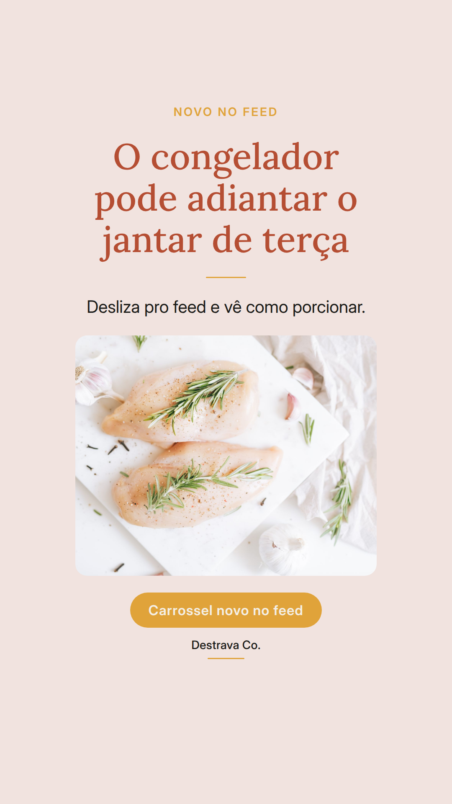
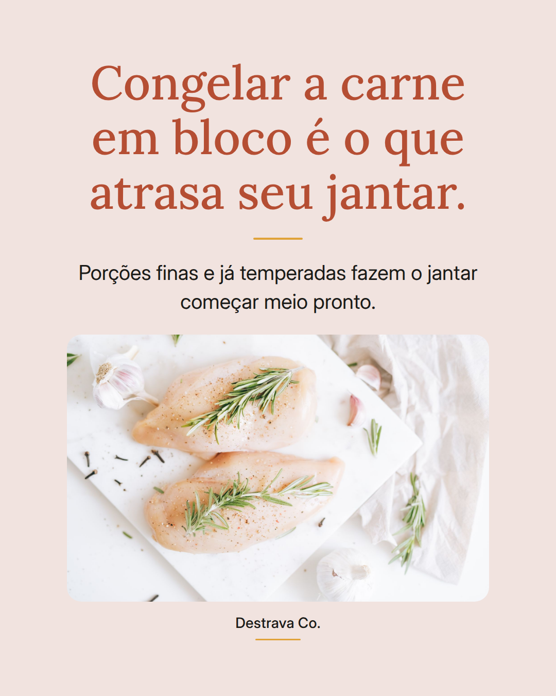
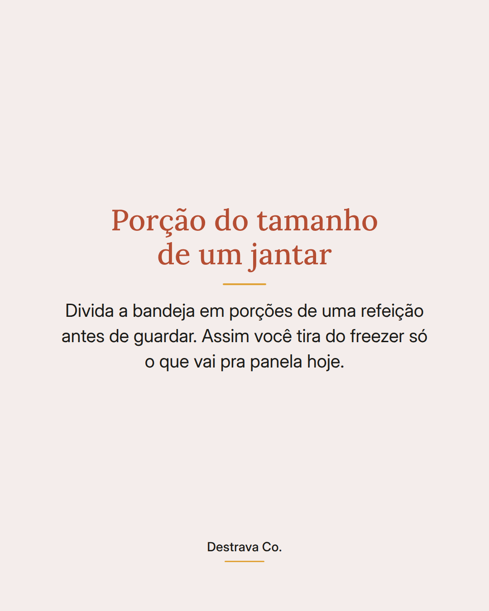
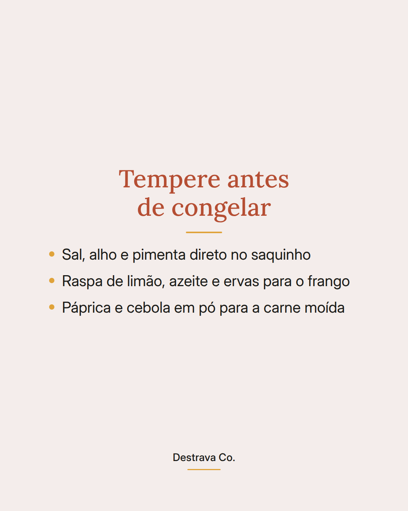
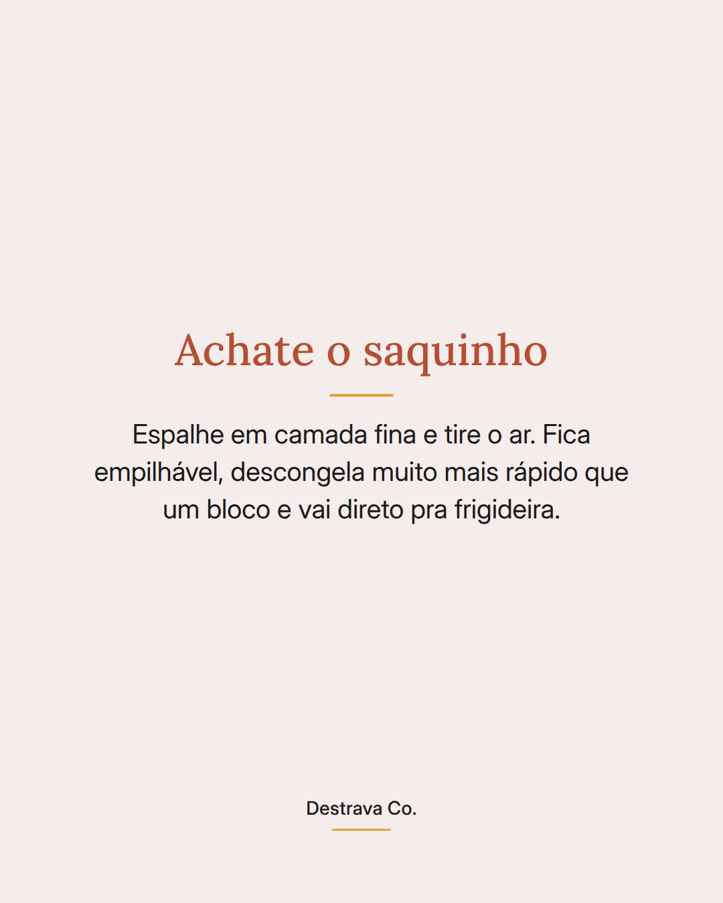

Congelar a carne em bloco é o que faz o jantar demorar uma hora.
Porção fina e já temperada muda o jogo: do congelador direto pra panela.
Quando você chega do mercado, separa a bandeja em porções de uma refeição, joga o tempero no saquinho e achata bem antes de fechar. O ar sai, o pacote fica deitado e empilhado, e o tempo no freezer ainda faz o tempero entrar na carne.
No dia corrido, a parte chata já está feita. Você só esquenta a frigideira e cuida do acompanhamento enquanto a proteína doura.
Salva pra lembrar na próxima compra e manda pra quem sempre esquece de descongelar. Se quiser mais ideias de jantar rápido, o PDF com 20 receitas de até 15 minutos está no perfil.